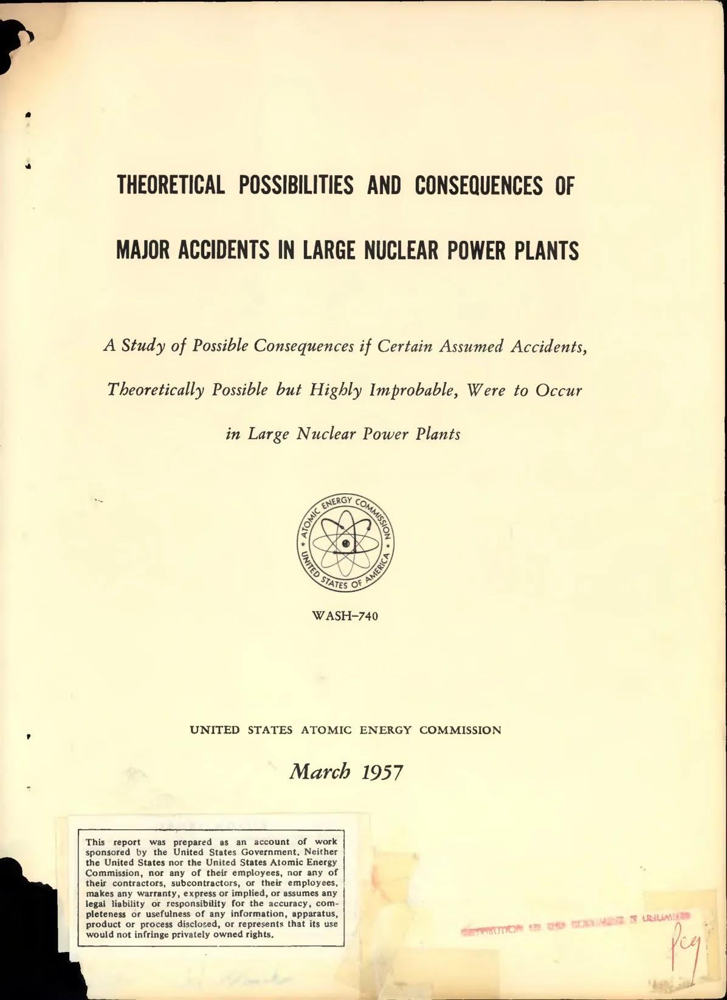
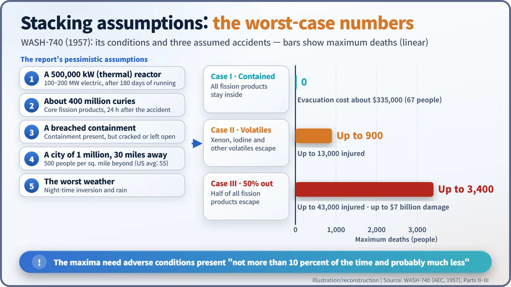
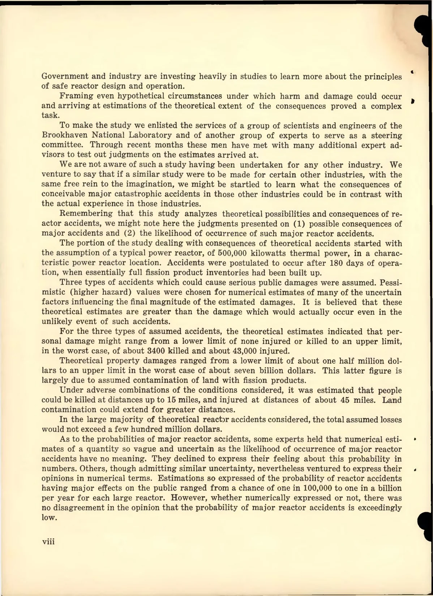
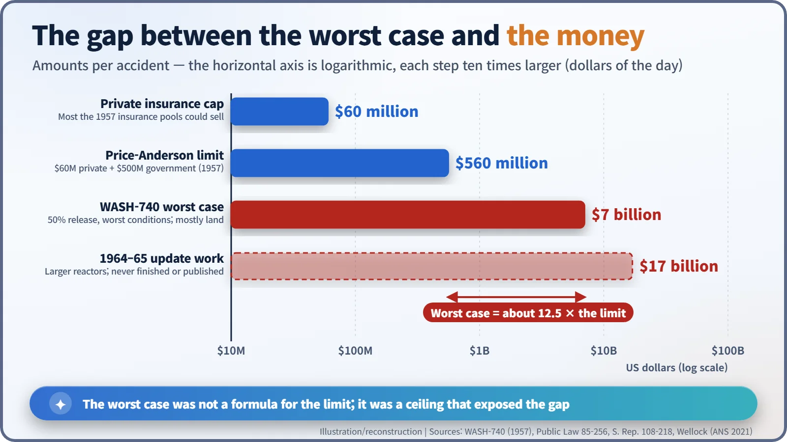

Nuclear History · 226
Drawing the Worst Case on Purpose — WASH-740, the Brookhaven Report (1957)
Congress wanted to know how bad a reactor accident could get before it capped liability; Brookhaven answered with a deliberately exaggerated ceiling.
In March 1957 the US Atomic Energy Commission published WASH-740, a Brookhaven National Laboratory study of what the worst imaginable accident at a large nuclear power plant might do. Stacking pessimistic assumption on assumption, it reached a ceiling of 3,400 deaths and $7 billion of damage, far above the $560 million liability limit Congress set that September. Its numbers were a deliberately exaggerated upper bound, not a prediction, and they are still quoted in opposite ways today.
An actuary with no data
Picture yourself as an insurance actuary in the summer of 1956. On your desk sits a brand-new product: liability cover for a nuclear power plant. For fire insurance you would have decades of claims data. Here there is almost nothing to go on. Pooling their capacity, the insurers can offer at most $60 million per accident. Meanwhile Congress is asking a blunter question: in the worst case, how bad could it get?
The document written to answer that question was published by the US Atomic Energy Commission (AEC) in March 1957. Its number was WASH-740. Most people call it the Brookhaven Report. [1]
Homework from Congress, arithmetic from Brookhaven
The Atomic Energy Act of 1954 let private companies own reactors, but utilities and manufacturers hesitated: a single accident could leave them with unlimited liability. Congress's Joint Committee on Atomic Energy (JCAE), preparing a law to cap that liability, formally asked the AEC on 6 July 1956 to estimate the damage from a worst-case accident.
The calculations were done by a team at Brookhaven National Laboratory on Long Island, New York, with Kenneth W. Downes as project director. On 22 March 1957 the AEC's acting chairman, Harold S. Vance, sent the results to the JCAE chairman, Carl T. Durham, noting that "more than two score leading experts" had taken part. [1]

Assumption stacked on assumption
Even the subtitle is cautious: the study concerns accidents "Theoretically Possible but Highly Improbable."
The starting point was a reactor of 500,000 kilowatts thermal, or 100,000 to 200,000 kilowatts of electricity. The accident was placed at the end of a 180-day run, when fission products (the radioactive fragments left when uranium splits) had built up the most: about 400 million curies in the core, measured a day after the accident. The plant stood by a river 30 miles (about 48 km) from a city of one million people, and the countryside beyond was assumed to hold 500 people per square mile, about nine times the US average of 55.
Then came three kinds of accident:
- Contained: every fission product stays inside the containment building.
- Volatile release: the containment cracks or an opening fails to close, and volatile products such as xenon and iodine escape.
- 50 per cent release: half of all the fission products reach the open air.

A myth worth clearing up
You will often read that WASH-740 "assumed no containment building." The report says the opposite: "A leak- and pressure-resistant containment building of the usual type is assumed to surround the reactor." What it assumed, in the second and third cases, is that this containment was breached. [1]
Where 3,400 came from
The famous figures come from the gloomiest case, the 50 per cent release: up to 3,400 deaths, up to 43,000 injuries and up to $7 billion of property damage, in 1957 dollars. Most of that money reflected land contaminated by fission products.
But the same table has other rows. With favourable weather and release conditions, the same accident killed no one and caused about half a million dollars of damage. The report itself said the maxima required an adverse combination of conditions that "would exist for not more than 10 percent of the time and probably much less." For comparison, the contained case produced no deaths and an evacuation bill of about $335,000, and the volatile-release case at most 900 deaths.
And the odds? Some experts refused to put a number on them at all, arguing that such numbers had no meaning. Those who did answer gave a range from one in 100,000 to one in a billion per reactor per year, a spread of ten thousand times. The covering letter was blunt: the study "is not in any sense a prediction of any future condition." [1]

The gap between the cap and the worst case
The Price-Anderson Act, approved on 2 September 1957, put $500 million of government indemnity on top of $60 million of private insurance. The total, $560 million, was roughly one-twelfth of the report's $7 billion worst case. Herbert J. C. Kouts, at whose Brookhaven division the study group was formed, recalled in 1998 that Congress, in writing the law, "ignored the upper limit estimates of WASH-740." [3] [5]

The update that was never finished
In 1964 the JCAE asked for an update that would reflect the much larger reactors then on the drawing board. Brookhaven's new calculations are reported to have been worse: up to 45,000 deaths and $17 billion in property damage. The AEC did not publish them. As NRC historian Thomas R. Wellock puts it, the update "was not released to the public, but it was not secret." After a lawyer for anti-nuclear groups threatened to sue, the AEC decided in 1973 to release it. [2]
In 1985 the Nuclear Regulatory Commission (NRC) told a requester that "the so-called 1964 Update of WASH-740 was never completed," and that seven notebook binders of preliminary calculations sat in its public reading room. [4]
Two readings, one boundary
The report is still quoted in opposite ways: by some as "the disaster study the government buried," by others as "a product of unrealistic assumptions." Both readings take in only half of the original. Meanwhile the AEC turned to MIT's Norman C. Rasmussen (1927–2003) for a new study that tried to estimate accident probabilities as well, and the result was WASH-1400 in 1975. In 2012 the NRC's State-of-the-Art Reactor Consequence Analyses (SOARCA) judged the risk of early deaths to be "essentially zero," meaning very low rather than literally nil. [2] [6]
So what did WASH-740 leave behind? Once you write the worst case down as a number, it becomes a boundary rather than a forecast. And faced with that boundary, a society has to answer another question: who pays, and how much?